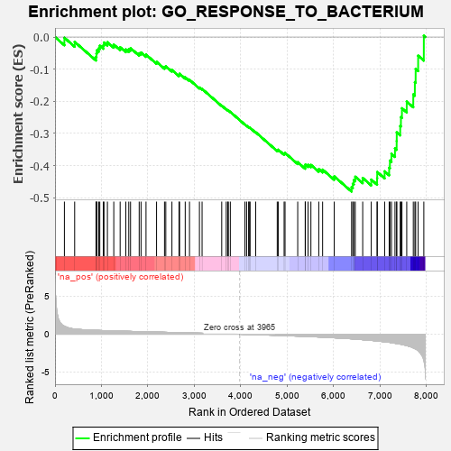
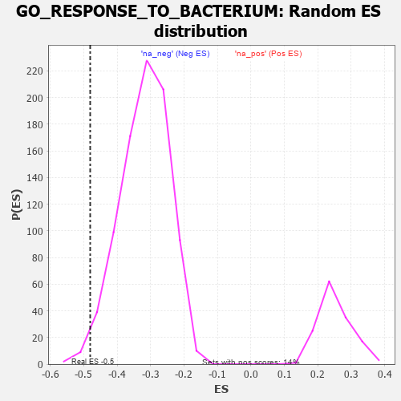

| | | Dataset | 7d |
| Phenotype | NoPhenotypeAvailable |
| Upregulated in class | na_neg |
| GeneSet | GO_RESPONSE_TO_BACTERIUM |
| Enrichment Score (ES) | -0.48076937 |
| Normalized Enrichment Score (NES) | -1.5126861 |
| Nominal p-value | 0.016336055 |
| FDR q-value | 0.17656937 |
| FWER p-Value | 1.0 |
Table: GSEA Results Summary

Fig 1: Enrichment plot: GO_RESPONSE_TO_BACTERIUM
Profile of the Running ES Score & Positions of GeneSet Members on the Rank Ordered List
| PROBE | GENE SYMBOL | GENE_TITLE | RANK IN GENE LIST | RANK METRIC SCORE | RUNNING ES | CORE ENRICHMENT | | 1 | BCL3 | | | 202 | 1.047 | -0.0023 | No |
| 2 | MLH1 | | | 423 | 0.679 | -0.0151 | No |
| 3 | PYGL | | | 882 | 0.510 | -0.0617 | No |
| 4 | HMGB2 | | | 892 | 0.507 | -0.0516 | No |
| 5 | HDAC5 | | | 900 | 0.506 | -0.0412 | No |
| 6 | PDCD4 | | | 941 | 0.497 | -0.0352 | No |
| 7 | CTR9 | | | 964 | 0.492 | -0.0271 | No |
| 8 | AKT1 | | | 1040 | 0.476 | -0.0260 | No |
| 9 | MEF2C | | | 1054 | 0.473 | -0.0171 | No |
| 10 | SRC | | | 1128 | 0.459 | -0.0162 | No |
| 11 | CDC73 | | | 1265 | 0.436 | -0.0237 | No |
| 12 | NOCT | | | 1402 | 0.409 | -0.0318 | No |
| 13 | LIAS | | | 1524 | 0.387 | -0.0385 | No |
| 14 | PAF1 | | | 1588 | 0.376 | -0.0382 | No |
| 15 | CDK4 | | | 1626 | 0.370 | -0.0346 | No |
| 16 | ABR | | | 1812 | 0.335 | -0.0506 | No |
| 17 | TRIM5 | | | 1852 | 0.327 | -0.0483 | No |
| 18 | CCR4 | | | 1959 | 0.312 | -0.0547 | No |
| 19 | SYK | | | 2186 | 0.278 | -0.0772 | No |
| 20 | MIF | | | 2357 | 0.252 | -0.0931 | No |
| 21 | OTUD5 | | | 2385 | 0.247 | -0.0910 | No |
| 22 | TLR1 | | | 2517 | 0.224 | -0.1026 | No |
| 23 | WDR83 | | | 2669 | 0.203 | -0.1172 | No |
| 24 | SASH1 | | | 2682 | 0.201 | -0.1143 | No |
| 25 | FER | | | 2803 | 0.183 | -0.1254 | No |
| 26 | FGFR2 | | | 2895 | 0.167 | -0.1332 | No |
| 27 | GPX1 | | | 3109 | 0.135 | -0.1572 | No |
| 28 | GCH1 | | | 3166 | 0.127 | -0.1614 | No |
| 29 | MAPK3 | | | 3589 | 0.062 | -0.2135 | No |
| 30 | CD180 | | | 3686 | 0.046 | -0.2246 | No |
| 31 | HSF1 | | | 3718 | 0.039 | -0.2277 | No |
| 32 | SYT11 | | | 3732 | 0.036 | -0.2285 | No |
| 33 | SBNO2 | | | 3774 | 0.032 | -0.2330 | No |
| 34 | PDE4B | | | 4089 | -0.022 | -0.2723 | No |
| 35 | ABL1 | | | 4125 | -0.027 | -0.2761 | No |
| 36 | GFI1 | | | 4168 | -0.037 | -0.2806 | No |
| 37 | FMO1 | | | 4181 | -0.038 | -0.2813 | No |
| 38 | GGT7 | | | 4200 | -0.041 | -0.2827 | No |
| 39 | ROMO1 | | | 4320 | -0.063 | -0.2963 | No |
| 40 | RAB14 | | | 4784 | -0.155 | -0.3515 | No |
| 41 | PPM1D | | | 4805 | -0.158 | -0.3505 | No |
| 42 | CASP1 | | | 4932 | -0.185 | -0.3624 | No |
| 43 | CHMP5 | | | 4952 | -0.188 | -0.3606 | No |
| 44 | TMF1 | | | 5225 | -0.251 | -0.3895 | No |
| 45 | FZD5 | | | 5386 | -0.292 | -0.4032 | No |
| 46 | PRDX3 | | | 5389 | -0.293 | -0.3970 | No |
| 47 | LYST | | | 5448 | -0.307 | -0.3975 | No |
| 48 | FABP4 | | | 5509 | -0.322 | -0.3979 | No |
| 49 | CASP8 | | | 5678 | -0.369 | -0.4110 | No |
| 50 | TLR2 | | | 5761 | -0.395 | -0.4126 | No |
| 51 | XBP1 | | | 6011 | -0.475 | -0.4335 | No |
| 52 | ISG15 | | | 6385 | -0.608 | -0.4673 | Yes |
| 53 | MBL2 | | | 6411 | -0.623 | -0.4566 | Yes |
| 54 | MALT1 | | | 6432 | -0.634 | -0.4450 | Yes |
| 55 | SRR | | | 6464 | -0.646 | -0.4346 | Yes |
| 56 | CUBN | | | 6624 | -0.727 | -0.4386 | Yes |
| 57 | ADAM9 | | | 6808 | -0.819 | -0.4435 | Yes |
| 58 | SNX3 | | | 6934 | -0.893 | -0.4395 | Yes |
| 59 | GHSR | | | 6937 | -0.894 | -0.4199 | Yes |
| 60 | RAB1A | | | 7096 | -0.993 | -0.4178 | Yes |
| 61 | TSPO | | | 7194 | -1.065 | -0.4064 | Yes |
| 62 | MPEG1 | | | 7210 | -1.083 | -0.3842 | Yes |
| 63 | ABCA1 | | | 7243 | -1.113 | -0.3635 | Yes |
| 64 | GRN | | | 7319 | -1.194 | -0.3465 | Yes |
| 65 | PLAC8 | | | 7355 | -1.223 | -0.3237 | Yes |
| 66 | WDR35 | | | 7357 | -1.225 | -0.2966 | Yes |
| 67 | KMO | | | 7432 | -1.308 | -0.2769 | Yes |
| 68 | GGT1 | | | 7447 | -1.329 | -0.2491 | Yes |
| 69 | SHPK | | | 7469 | -1.360 | -0.2216 | Yes |
| 70 | LITAF | | | 7572 | -1.511 | -0.2009 | Yes |
| 71 | HMCN1 | | | 7713 | -1.801 | -0.1786 | Yes |
| 72 | CASP3 | | | 7747 | -1.902 | -0.1405 | Yes |
| 73 | PDE4D | | | 7764 | -1.944 | -0.0993 | Yes |
| 74 | TRAF6 | | | 7818 | -2.157 | -0.0580 | Yes |
| 75 | MRC1 | | | 7940 | -3.475 | 0.0039 | Yes |
Table: GSEA details [plain text format]

Fig 2: GO_RESPONSE_TO_BACTERIUM: Random ES distribution
Gene set null distribution of ES for GO_RESPONSE_TO_BACTERIUM